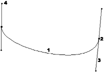

Flash. Кривые Безье — основа основ
Галина Корабельникова, Юрий Гурский, Компьютерная газета
Сегодня мы поговорим о кривых, или, как их еще иначе называют,
о путях. Эта тема была выбрана не случайно. Мы не раз уже обращали ваше внимание
на то, что Flash — это программа, в большей степени работающая с векторными
элементами, а пути являются основой практически любого вектора. Следует также
отметить, что раньше мы рассматривали программы, предназначенные для обработки
растровых изображений, такие как Adobe PhotoShop, Corel Photo-Paint, поэтому о
векторах говорили лишь обзорно, но пришло время это исправить.

Вспомним отличия между растровой
и векторной графиками. Растр — это массив элементарных точек, пикселей, из
которых составляется изображение. Векторная графика основана на математических
формулах, описывающих неровности контуров и способ заливки.
В PhotoShop, например, есть целая группа инструментов для работы с
путями, основой которой является Pen. Подобные инструменты вы можете встретить в
любом редакторе векторной графики и в большинстве хороших растровых программ.
Причина этому проста — во всех продуктах пути создаются и
редактируются по одному принципу, так как в их основе лежит одно понятие —
кривые Безье.
Создателем их еще в 68 году стал французский ученый, математик и
инженер Пьер Безье. Тогда это все делалось для необходимости тяжелой
промышленности. Пьеру была поставлена задача: научиться минимальными машинными
ресурсами максимально просто и обобщенно описывать любые сложные плоскостные
формы. Это нужно было для машин по обработке листового металла, которые вырезали
из него необходимые детали.
Безье справился не просто хорошо, а гениально. Его система кривых,
основанная на тригонометрических формулах, оказалась настолько простой и
удачной, что легла в основу не только графических, но и многих других программ.
В компьютерной графике кривые Безье занимают чуть ли не главное
место. Это не только основа векторной графики, но и способ описания шрифтов,
универсальный способ передачи выделения. Научившись работать с ними в одной
программе, вы не будете иметь никаких затруднений при работе с множеством других
— повторимся, принцип везде одинаков.
Прежде, чем что-то изучать, нужно понять, какую функцию выполняет
этот инструмент, средство.
Самая главная функция контуров, которая была и остается основной
причиной их использования, — рисование различных геометрических фигур разной
степени точности.
Согласитесь, создать правильные с точки зрения геометрии, ровные
фигуры при помощи инструментов рисования не просто сложно, а фантастически
сложно. Для этого нужно было бы обладать хорошими художественными способностями,
серьезными навыками работы и профессиональными манипуляторами. Эти условия
противоречат основной концепции практически любого графического редактора — в
программе хорошие работы может делать человек, который руками рисовать
совершенно не умеет.
А при помощи кривых создание сложных фигур сводится к очень
простым и интуитивно понятным манипуляциям.
Кроме того, фигуры, нарисованные при помощи контуров, можно
трансформировать и масштабировать без потери качества (в этом одно из главных
достоинств векторной графики вообще).
Именно благодаря существованию контуров в растровой графике
возможно качественное создание логотипов и тому подобных работ (хотя чаще все же
используются специальные программы, предназначенные для работы с векторами).
Второе основное значение путей — выделение. Если обратиться вновь
ко всеми уважаемой и любимой программе PhotoShop, то в ранних версия, например в
3, большая часть работы с выделением никак не могла обойтись без этого столь
замечательного инструмента. С развитием программы появились и другие способы
маскирования, однако пути не утратили своей актуальности и в данный момент, и
иногда все же удобнее выделять при помощи инструментов группы Pen (Перо). Кроме
того, контуры сохраняются во многих типах файлов, в отличие от чистого выделения
и Альфа каналов. И при хранении размер файла от добавления в него контура почти
не увеличивается, что нельзя сказать про другие способы выделения. Именно
поэтому довольно часто в коммерческих библиотеках изображений, которые можно
купить на CD носителях, изображения поставляются с обтравочными контурами.
Пути применяются и при создании множества эффектов, и для
треппинга, и во множестве других случаев, перечислить которые просто не
представляется возможным.
Рассмотрим несколько подробнее путь, из чего он состоит и как с
ним работать.
Самое тяжелое в работе с контурами — научиться ими пользоваться
сознательно. А это, наверное, наиболее тяжелый момент в изучении программы, если
раньше вы не сталкивались с данным инструментом. Конечно, есть определенные
правила, которые мы изложим чуть ниже, но все же успех в основном зависит не от
этого.
В контурах, как нигде, нужно интуитивно чувствовать, к чему
приведет то или иное изменение. А достигается это только одним способом — в ходе
собственной практики.
Посмотрите на рисунок. На нем показана структура контура.
Как видно, контур состоит из четырех основных элементов.
1.
Непосредственно кривая Безье. То, ради чего все и делается. Именно она
называется контуром и является объектом нашей деятельности. Все остальные
элементы служат только для того, чтобы придать кривой нужную форму. То есть,
этот элемент можно назвать основополагающим, все остальные —
вспомогательными.
2. Якорная точка (Anchor Point). Кривая Безье с двух сторон
ограничена именно этими линиями, они во многом определят ее форму. В случае,
если в контуре больше двух якорных точек, то, следовательно, он состоит из
множества кривых Безье. Якорные точки можно передвигать относительно друг друга,
настраивая вид пути.
3. Направляющая линия (Control Handle). Эта линия
выходит из якорной точки. Она является касательной к кривой Безье. Для тех, кто
не очень помнит математику, объясним — это значит, что эта линия касается прямой
только в одной точке и что любые изменения, которые вы будете производить с
направляющей линией, будут самым прямым образом отражаться и на кривой.
Направляющих может быть одна или две.
4. Маркер. Именно так называется этот
фрагмент, которым заканчивается направляющая линия. Служит маркер для одной цели
— изменения длины и положения направляющих. С положением все ясно — уже было
сказано, что это касательная к кривой Безье, поэтому, меняя положение, мы меняем
ее форму. Такое же важное значение имеет и длина направляющих. Она определяет
амплитуду кривой, или, если проще, — степень "выгнутости".
Таким образом, первый вывод относительно контуров — залог
качественной работы с ними скрывается в умении пользоваться, прежде всего,
направляющими.
Во Flash существует два типа якорных точек. Разработчики назвали
их Smooth (Гладкие) и Corner (Острые). Эта тонкость очень повышает удобство
работы с контурами, но новичкам осваивать гораздо сложнее, чем если бы был один
тип.
Сначала поговорим про более простые, гладкие якорные точки.
Гладкий угол всегда имеет две направляющие с разных сторон. Они взаимосвязаны —
при повороте одной на определенный градус точно так же поворачивается вторая.
Лучше всего воспринимайте их как одну линию — это наиболее прямая аналогия.
При повороте направляющих линий кривая тоже как бы оборачивается.
Внешний вид при этом зависит еще и от длины направляющих линий. Данный режим в
основном используется для создания плавных, обтекаемых фигур.
Другой тип якорных точек — острые якорные точки. Они отличаются от
гладких тем, что у них может быть три варианта наличия вспомогательных линий (в
противовес гладким, у которых только один тип — две направляющие линии):
1.
Вообще без вспомогательных линий. Да, такое возможно и предназначается для
рисования, к примеру, треугольников и им подобных фигур. Работать с таким типом
острых якорных точек проще всего.
2. Одна вспомогательная линия. Так как
вспомогательные линии в этом режиме, в отличие от режима гладких якорных точек,
не связаны, то объект можно трансформировать и при помощи одной линии.
3.
Острая якорная точка с двумя направляющими. Наиболее сложный режим. Позволяет
создавать действительно сложные формы, не обладающие симметрией.
Одним из основных заблуждений начинающих пользователей является
то, что они склонны считать пути частью изображения. Это совсем не так. Путь —
это вспомогательный элемент, он не несет в себе графической информации в
растровом смысле этого слова. Но когда путь создан, его можно или залить
пикселями (в растре), или прорисовать линией, или превратить в выделение.
Еще раз повторимся, что, в принципе, при помощи контуров можно
передать абсолютно любую форму — все зависит от навыков и таланта. У авторов был
знакомый, который умел контурами имитировать подчерк (!) человека. Конечно, это
уникальный случай, но про возможности инструментов говорит много.
Рассмотрим основные инструменты работы с путями, которые
встречаются практически в каждом графическом редакторе.
Главный инструмент для работы с контурами. Нельзя сказать, что при
помощи его выполняется больше работы, чем при помощи других. Дело не в этом.
Просто Pen Tool обычно создает основу, путь, почти все другие — только
редактируют его.
Есть два основных способа работы с Pen — создание прямоугольных,
острых контуров и более сложных, плавных.
Начнем с более простого, с прямоугольных форм. Создайте новый
документ. Запустите указанный инструмент. Кликните левой клавишей мыши. Появится
первая якорная точка. Отведите курсор немного в сторону и снова кликните.
Появится вторая якорная точка и тотчас соединится с первой кривой Безье.
Пользуясь точно такой же технологией и дальше, можно создать
достаточно сложный контур.
Если же вы возвращаете курсор к точке начала создания контура, то
он приобретает своеобразный вид, что значит, что при клике в эту точку контур
будет закончен и превратится в так называемый замкнутый тип контура. Такой
контур обладает рядом свойств, в частности, возможностью превращения в
выделение.
Несколько сложнее обстоит дело с созданием плавных, обтекаемых
форм.
Начинать нужно точно так же, как и при создании прямых узлов.
Кликните, поставьте первую оперную точку. Отнесите курсор мыши на достаточное
расстояние и снова кликните левой клавишей мыши для того, чтобы поставить вторую
якорную точку. Но кнопку мыши после этого не отпускайте и начинайте передвигать
курсор, при этом удерживая кнопку мыши.
Сразу появятся направляющие линии, и кривая начнет плавно
изгибаться. Один маркер будет располагаться ровно под вашим курсором, то есть с
этого момента вы редактируете вид кривой уже при помощи направляющих.
Далее можно преобразовывать полученную кривую, редактируя
направляющие.
Примерно по такому же принципу создаются все, даже самые сложные
контуры. Конечно, работу облегчают инструменты редактирования контуров, с
которыми мы познакомимся чуть ниже, но основу вы уже знаете.
По своему действию Freeform Pen очень похож на лассо, только
создает не выделение, а контур.
Предназначен этот инструмент для создания абсолютно свободных по
форме путей. Правда, действительно хорошо с Freeform Lasso работать только при
наличии дигитайзера, мышью почти ничего толкового не сделать.
Пользоваться Свободным пером очень просто: зажимаете левую клавишу
мыши и двигаете саму мышь. Вся траектория курсора до отпускания клавиши станет
контуром.
Этот инструмент встречается не во всех программах, но упомянуть
все же стоит. Пользоваться им чрезвычайно просто. Вы кликаете левой клавишей
мыши и ставите первую якорную точку. Дальше ведете вдоль объекта, вокруг
которого необходимо создать путь, — и компьютер сам определяет, как располагать
кривые.
Программа сама расставляет якорные точки в зависимости от
перепадов яркости, то есть, сложности контура и своих собственных, определенных
пользователем, параметров. Но и вы при создании пути этим способом можете
определять места для якорных точек. Это необходимо в случае, когда перепад
яркости в этом месте недостаточен для правильного определения программой нужного
пути. Add Anchor
Этот инструмент не умеет сам создавать пути, однако имеющиеся
преобразовывает очень хорошо.
Рассмотрим это на примере. Создайте путь в виде прямоугольника.
Затем возьмите изучаемый инструмент. Кликните по одной стороне
прямоугольника. Появится новая якорная точка. Вытяните ее в сторону. В
результате одна сторона прямоугольника оказалась как бы раздута.
Точно таким же способом пофантазируйте с контуром и в других
местах. Не забывайте о том, что можно настраивать длину направляющих линий и,
как следствие, степень влияния перемещения якорной точки на кривую Безье.
Этот инструмент не столь впечатляющ, как предыдущие, и
рассматривать его стоит лишь как очень редко полезное дополнение к Add Anchor
Point.
При помощи него можно удалять опорные точки из контуров. Это бывает
полезно, если, например, какая-либо из них мешает правильной трансформации пути.
Относительно сложный в работе инструмент. Служит для
редактирования пути через изменение свойств якорных точек и положения
направляющих. Сформулируем основные принципы работы этого инструмента.
1.
Клик по существующей якорной точке позволяет вытянуть из нее новые направляющие
линии гладкого типа.
2. Если линии уже вытянуты, то манипуляции с маркером
любой из них превращает якорную точку в острую.
3. Клик по якорной точке с
выдвинутыми направляющими убирает их. При этом данный фрагмент пути приобретает
"прямой" вид.
Основываясь на этих трех правилах, потренируйтесь немного — и вы
научитесь вполне сносно обращаться с этим инструментом.
Здесь рассмотрены не все, но основные инструменты группы Pen
(Перо), так как программ достаточно много и в каждой есть свои особенности,
связанные с применением данных инструментов, свои дополнительные настройки,
клавиатурные эквиваленты, поэтому мы посчитали, что наиболее важным является
понять общий принцип работы с данными элементами.